Jose V. Benavides EEE588 Spring 2007 Home Exam
Contents
- Problem 1 (Stability Robustness Analysis - Delay Margin)
- (a) Determine the delay margin of the nominal design.
- (b) Use the (SGC) to estimate DM. Use a multiplicative modeling error,
- (c) additive modeling error characterization.
- ************************************************************************
- ************************************************************************
- Problem 2 (Stability Robustness Analysis - High Frequency Dynamics)
- (a) Determine how small wn can be made before instability sets in.
- (b) Use SGC to estimate the minimum possible wn. Use a multiplicative modeling error
- (c) additive modeling error characterization.
- (d) Show and discuss how L = PK, S = 1/1+PK, T = 1-S, KS, and SP change as wn is reduced.
- ************************************************************************
- ************************************************************************
- Problem 3 (Stability Robustness Analysis - PUMA Robotic Manipulator)
- (b) Use the SGC to estimate the minimum possible wn.
- (c) additive modeling error characterization at the plant output.
- (d) Show and discuss how L = PK, S = (I + PK)?1, T = I ? S, KS, and SP change as wn is reduced.
- ************************************************************************
- ************************************************************************
- Problem 4 (LQR Design for Modified F8 Aircraft)
- ************************************************************************
- ************************************************************************
- Problem 5
- Plant Dynamics
- TIME RESPONSES
- ************************************************************************
- ************************************************************************
- Problem 6: Control System Design of a Fishery
clc; clear all; close all; format long set(0, 'DefaultLineLineWidth', 2)
Problem 1 (Stability Robustness Analysis - Delay Margin)
Consider the LTI plant P = Poexp(-sg) where Po = 1/s and g > 0. Consider the nominal controller K = 1.
(a) Determine the delay margin of the nominal design.
Po = tf(1,[1 0]); K = tf(1,1); L = series(Po,K);
[Gm,Pm,Wg,Wp] = margin(L);
DM = Pm/Wp * (pi/180);
display(sprintf('The nominal delay margin is %.4f',DM))
The nominal delay margin is 1.5708
(b) Use the (SGC) to estimate DM. Use a multiplicative modeling error,
w = logspace(-1,2,100); T1 = tf(-1,[1 1]); % This is what the uncertainty "sees" [T1_mag] = bode(T1,w); % Take the magnitude for g1 = 1:0.001:2 % Search g values for wich delta_mag < T_mag delta_mag = 1./sqrt((cos(w*g1)-1).^2 + sin(w*g1).^2); % Calc magnitude of uncertainty Flag = 0; for j = 1:length(w) if delta_mag(j) <= T1_mag(j), Flag = 1; end end if Flag == 1, break; % Break loop once a g is found end end figure; loglog(w,T1_mag(1,:),w,delta_mag); grid on; display(sprintf('The aproxamate delay margin using SGC and mult_error is %.4f',g1))
The aproxamate delay margin using SGC and mult_error is 1.4790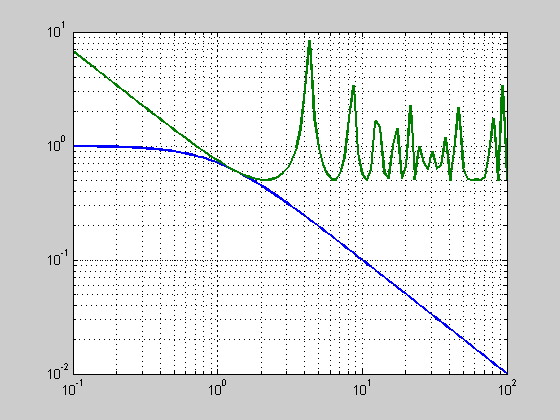
(c) additive modeling error characterization.
T2 = tf([-1 0],[1 1]); % This is what the uncertainty "sees" [T2_mag] = bode(T2,w); % Take the magnitude for g2 = 1:0.001:2 % Search g values for wich delta_mag < T_mag delta_mag = 1./sqrt(((-cos(w*g2)+1)./w).^2 + (sin(w*g2)./w).^2); % Calc magnitude of uncertainty Flag = 0; for j = 1:length(w) if delta_mag(j) <= T2_mag(j), Flag = 1; end end if Flag == 1, break; % Break loop once a g is found end end figure; loglog(w,T2_mag(1,:),w,delta_mag); grid on; display(sprintf('The aproxamate delay margin using SGC and add_error is %.4f',g2))
The aproxamate delay margin using SGC and add_error is 1.4790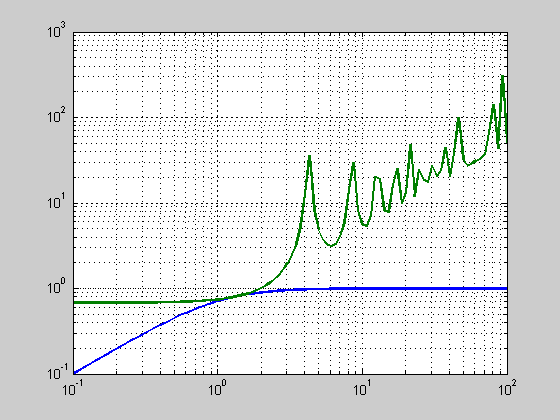
The answers obtained using the SGT are more conservative than the exact one in (a). The delay margins of (b) & (c) are smaller that that of (a).
************************************************************************
************************************************************************
Problem 2 (Stability Robustness Analysis - High Frequency Dynamics)
Consider the LTI plant P, Po, and K.
clc; clear all; close all; Po = tf(1,[1 -1]); K = series(tf([3 2],[1 0]),tf(100,[1 100]));
(a) Determine how small wn can be made before instability sets in.
for wn = 3:0.01:10, P = series(Po,tf(100*wn^2,conv([1 100],[1 2*0.7071*wn wn^2]))); L = series(P,K); S = 1/(1+L); clpoles = eig(S); % POLE STABILITY STATUS DETERMINATION nclpoles = size(clpoles)*[1 0]'; % Determine number of closed loop poles stabvec = 0*ones(nclpoles,1); for polecounter = 1:1:nclpoles % CHECK STABILITY OF EACH POLE - Form Stability Status Vector if real(clpoles(polecounter,1)) < 0, stabvec(polecounter,1) = 1; % POLE IS STABLE else stabvec(polecounter,1) = 0; % POLE IS NOT STABLE end end % END POLE EXAMINATION LOOP % CHECK STABILITY: IF STABLE if norm(stabvec,1)==nclpoles, % DO IF STABLE break; end end [Gm,Pm,Wg,Wp] = margin(L); display(sprintf('The smallest stabalizing wn is %.4f',wn)) % The smallest stabalizing wn is 4.5430
The smallest stabalizing wn is 4.5500
(b) Use SGC to estimate the minimum possible wn. Use a multiplicative modeling error
w = logspace(-2,3,100); T = series(-Po,K)/(1+series(Po,K)); [T_mag] = bode(T,w); for wn = 3:0.01:10, delta_m = 1/(tf(100*wn^2,conv([1 100],[1 2*0.7071*wn wn^2]))-1); [delta_mag] = bode(delta_m,w); Flag = 0; for j = 1:length(w) if delta_mag(j) <= T_mag(j), Flag = 1; end end if Flag ~= 1, break; % Break loop once a g is found end end figure; loglog(w,T_mag(1,:),w,delta_mag(1,:)); grid on; display(sprintf('The smallest stabalizing wn is %.4f',wn)) % The smallest stabalizing wn is 4.5400
The smallest stabalizing wn is 4.5400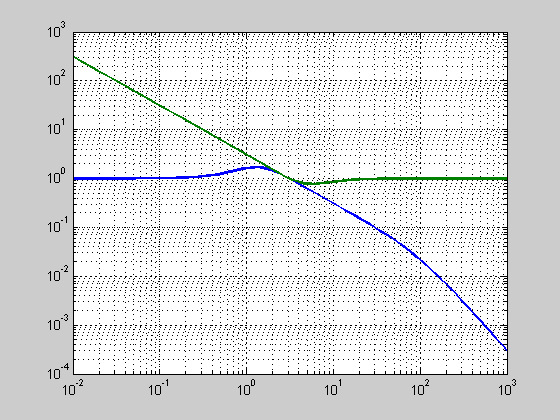
(c) additive modeling error characterization.
T = -K/(1+series(Po,K)); [T_mag] = bode(T,w); for wn = 3:0.01:10, delta_m = 1/series(tf(100*wn^2,conv([1 100],[1 2*0.7071*wn wn^2]))-1,Po); [delta_mag] = bode(delta_m,w); Flag = 0; for j = 1:length(w) if delta_mag(j) <= T_mag(j), Flag = 1; end end if Flag ~= 1, break; % Break loop once a g is found end end figure; loglog(w,T_mag(1,:),w,delta_mag(1,:)); grid on; display(sprintf('The smallest stabalizing wn is %.4f',wn)) % The smallest stabalizing wn is 4.5400
The smallest stabalizing wn is 4.5400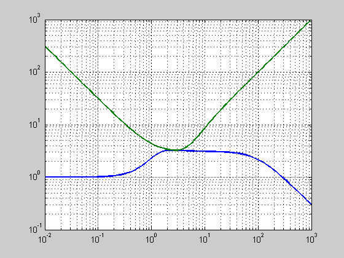
The answers obtained in (b) and (c) were slightly more conservative that the exact answer in (a).
(d) Show and discuss how L = PK, S = 1/1+PK, T = 1-S, KS, and SP change as wn is reduced.
Choose 3 wn values to generate your Bode plots (magnitude and phase for L, magnitude for others). Note: Your S plot should have 3 curves on it. Similar for other plots.
wn = [4.5430 6 10];
P = [series(Po,tf(100*wn(1)^2,conv([1 100],[1 2*0.7071*wn(1) wn(1)^2])))
series(Po,tf(100*wn(2)^2,conv([1 100],[1 2*0.7071*wn(2) wn(2)^2])))
series(Po,tf(100*wn(3)^2,conv([1 100],[1 2*0.7071*wn(3) wn(3)^2])))];
L = series(P,K);
figure; bode(L(1));grid on; hold on; Bode(L(2)); Bode(L(3));
Title('L'); legend('wn=4.54','wn=6','10');
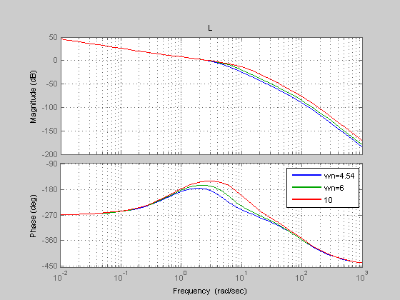 A zoom in on this plot will show that with wn = 4.54, the angle of L(jwn) is just barely -180 deg. and thus stable. One can also see the bandwidth increase with wn.
The rest of the plots in this problem show that a higher wn lowers the sensitivity at specific frequencies. The high freq. dynamics are pushed out and away from the nominal system dynamics.
S = [1/(1+L(1)), 1/(1+L(2)), 1/(1+L(3))]; [S_mag1] = bode(S(1),w); [S_mag2] = bode(S(2),w); [S_mag3] = bode(S(3),w); figure; loglog(w,S_mag1(1,:),w,S_mag2(1,:),w,S_mag3(1,:)); Title('S'); legend('wn=4.54','wn=6','10');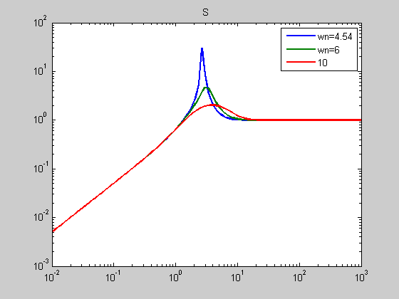
T = 1 - S; [T_mag1] = bode(T(1),w); [T_mag2] = bode(T(2),w); [T_mag3] = bode(T(3),w); figure; loglog(w,T_mag1(1,:),w,T_mag2(1,:),w,T_mag3(1,:)); Title('T'); legend('wn=4.54','wn=6','10');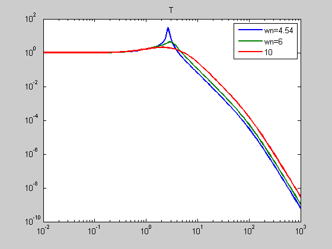
K_S = series(K,S); [K_S_mag1] = bode(K_S(1),w); [K_S_mag2] = bode(K_S(2),w); [K_S_mag3] = bode(K_S(3),w); figure; loglog(w,K_S_mag1(1,:),w,K_S_mag2(1,:),w,K_S_mag3(1,:)); Title('KS'); legend('wn=4.54','wn=6','10');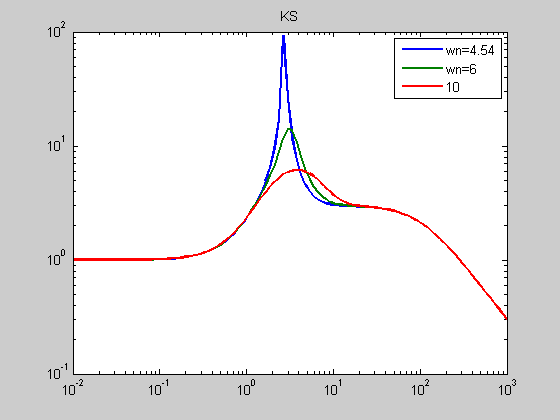
S_P = [series(S(1),P(1)), series(S(2),P(2)), series(S(3),P(3))]; [S_P_mag1] = bode(S_P(1),w); [S_P_mag2] = bode(S_P(2),w); [S_P_mag3] = bode(S_P(3),w); figure; loglog(w,S_P_mag1(1,:),w,S_P_mag2(1,:),w,S_P_mag3(1,:)); Title('SP'); legend('wn=4.54','wn=6','10');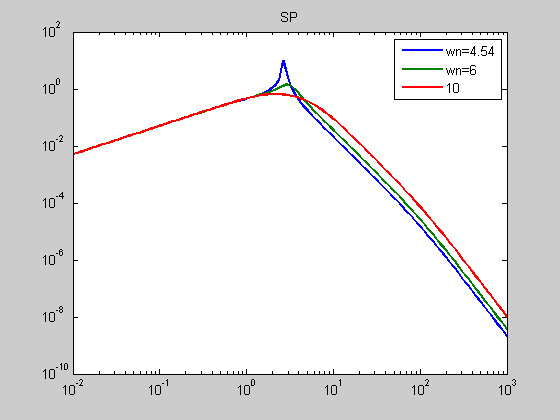
************************************************************************
************************************************************************
clc; clear all; close all;
Problem 3 (Stability Robustness Analysis - PUMA Robotic Manipulator)
Po represents the two-input two-output TFM for the PUMA in your text and wn > 0. Consider the nominal Hinf design discussed in class.
Ap = [ 0.0000 0.0000 1.0000 0.0000; 0.0000 0.0000 0.0000 1.0000; 31.7613 -33.0086 0.0000 0.0000; -56.9381 187.7089 0.0000 0.0000]; Bp = [ 0.0000 0.0000; 0.0000 0.0000; 103.7726 -391.9667; -391.9667 2030.8306]; Cp = [eye(2) zeros(2)]; Dp = zeros(2); Po = ss(Ap, Bp, Cp, Dp);
W1 - Weighting on Sensitivity TFM, S = (I + PK)^{1}
family_vector = 3; index = 1; Eps = 0.001; Ms11 = 10^(10/20); wb11 = family_vector(index); Ms22 = 10^(10/20); wb22 = family_vector(index); W1 = [tf([1/Ms11 wb11], [1 wb11*Eps]) 0; 0 tf([1/Ms22 wb22], [1 wb22*Eps])]; % W2 - Weighting on Control Sensitivity TFM, KS wbu11 = 1e8; Mu11 = 1e2; wbu22 = 1e8; Mu22 = 1e2; W2 = [tf([1 wbu11/Mu11], [Eps wbu11]) 0; 0 tf([1 wbu22/Mu22], [Eps wbu22])]; % W3 - Weighting on Complementary Sensitivity TFM, T = I - S My11 = 10^(10/20); wbc11= 50; My22 = 10^(10/20); wbc22= 50; W3 = [tf([1 wbc11/My11], [Eps wbc11]) 0; 0 tf([1 wbc22/My22], [Eps wbc22])];
[G] = augw(Po, W1, W2, W3); [K,CL,GAM,INFO] = hinfsyn(G,2,2,'method','ric','TOLGAM',1e-3,'display', 'on'); [Ak Bk Ck Dk] = ssdata(K);
Resetting value of Gamma min based on D_11, D_12, D_21 terms
Test bounds: 0.3162 < gamma <= 1.4262
gamma hamx_eig xinf_eig hamy_eig yinf_eig nrho_xy p/f
1.426 7.0e+000 2.6e-017 3.0e-003 -2.5e+006# 0.1075 f
Gamma max, 1.4262, is too small !!
Resetting value of Gamma min based on D_11, D_12, D_21 terms
Test bounds: 0.3162 < gamma <= 0.7497
gamma hamx_eig xinf_eig hamy_eig yinf_eig nrho_xy p/f
0.750 6.8e+000 1.2e-012 3.0e-003 -2.3e-011 0.9970 p
0.533 6.4e+000 1.2e-012 2.9e-003 -3.0e+007# 4.3965# f
0.641 6.7e+000 1.2e-012 2.9e-003 -8.3e-013 4.5021# f
0.696 6.7e+000 1.2e-012 3.0e-003 -2.5e-011 1.7251# f
0.723 6.8e+000 1.2e-012 3.0e-003 -3.7e-012 1.2612# f
0.736 6.8e+000 1.2e-012 3.0e-003 -7.4e-011 1.1333# f
0.743 6.8e+000 1.2e-012 3.0e-003 -2.7e-011 1.0415# f
0.746 6.8e+000 1.2e-012 3.0e-003 -3.6e-012 1.0314# f
0.748 6.8e+000 1.2e-012 3.0e-003 -9.7e-012 1.0218# f
0.749 6.8e+000 1.2e-012 3.0e-003 -8.9e-012 1.0032# f
Gamma value achieved: 0.7497
for wn = 56:0.001:60, P = series(Po,ss(tf(100*wn^2,conv([1 100],[1 2*0.7071*wn wn^2])))); [Lo,Li,So,Si,To,Ti,KS,SP] = f_CLTFM(P,K); %#ok<NASGU> clpoles = eig(So); % POLE STABILITY STATUS DETERMINATION nclpoles = size(clpoles)*[1 0]'; % Determine number of closed loop poles stabvec = 0*ones(nclpoles,1); for polecounter = 1:1:nclpoles % CHECK STABILITY OF EACH POLE - Form Stability Status Vector if real(clpoles(polecounter,1)) < 0, stabvec(polecounter,1) = 1; % POLE IS STABLE else stabvec(polecounter,1) = 0; % POLE IS NOT STABLE end end % END POLE EXAMINATION LOOP % CHECK STABILITY: IF STABLE if norm(stabvec,1)==nclpoles, % DO IF STABLE break; end end display(sprintf('The smallest stabalizing wn is %.4f',wn)) % The smallest stabalizing wn is 56.0760
The smallest stabalizing wn is 56.0760
(b) Use the SGC to estimate the minimum possible wn.
Use a multiplicative modeling error characterization at the plant output,
w = logspace(-3,5,100); % Form T as seen from multiplicative delta (I + Lo)^{-1} Lo % To = PKinv(I+PK) [Lo,Li,So,Si,To,Ti,KS,SP] = f_CLTFM(Po,K); %#ok<NASGU> Tm = -To; figure; [sv1]=sigma(Tm,w); sigma(Tm,w); hold on; for wn = 55:0.1:60, P = series(Po,ss(tf(100*wn^2,conv([1 100],[1 2*0.7071*wn wn^2])))); delta_m = inv((P-Po)*inv(Po)); [sv2]=sigma(delta_m,w); Flag = 0; for j=1:length(w) if min(sv2(1,j),sv2(2,j)) <= max(sv1(1,j),sv1(1,j)), Flag = 1; end end if Flag ~= 1, break; end end sigma(delta_m,w); display(sprintf('The smallest stabalizing wn is %.4f',wn)) % The smallest stabalizing wn is 56.0760
The smallest stabalizing wn is 56.9000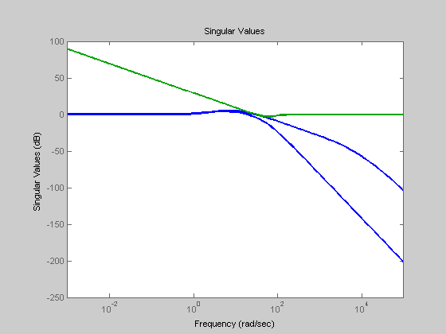
(c) additive modeling error characterization at the plant output.
Form T as seen from Additive error -KSo
[Lo,Li,So,Si,To,Ti,KS,SP] = f_CLTFM(Po,K); Ta = series(-K,So); figure; [sv1]=sigma(Ta,w); sigma(Ta,w); hold on; wn = 57; % for wn = 55:1:60, Ta = Po*ss(tf(100*wn^2,conv([1 100],[1 2*0.7071*wn wn^2]))-1); delta_a = inv(Ta); % [sv2]=sigma(delta_a,w); % Flag = 0; % for j=1:length(w) % if min(sv2(1,j),sv2(2,j)) <= max(sv1(1,j),sv1(1,j)), % Flag = 1; % end % end % if Flag ~= 1, % break; % end % end % display(wn); sigma(delta_a,w); % Comment on the conservatism of the answers obtained in (b) and (c) with % respect to the exact answer in (a).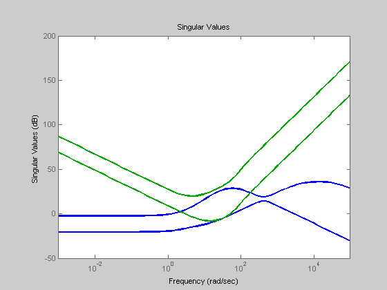
(d) Show and discuss how L = PK, S = (I + PK)?1, T = I ? S, KS, and SP change as wn is reduced.
Provide 3 representative sets of singular value plots to support your discussion.
wn = [100, 75, 56.9]; P = series(Po,ss(tf(100*wn(1)^2,conv([1 100],[1 2*0.7071*wn(1) wn(1)^2])))); [Lo1,Li1,So1,Si1,To1,Ti1,KS1,SP1] = f_CLTFM(P,K); P = series(Po,ss(tf(100*wn(2)^2,conv([1 100],[1 2*0.7071*wn(2) wn(2)^2])))); [Lo2,Li2,So2,Si2,To2,Ti2,KS2,SP2] = f_CLTFM(P,K); P = series(Po,ss(tf(100*wn(3)^2,conv([1 100],[1 2*0.7071*wn(3) wn(3)^2])))); [Lo3,Li3,So3,Si3,To3,Ti3,KS3,SP3] = f_CLTFM(P,K); figure(10); sigma(Lo1); hold on; sigma(Lo2); sigma(Lo3); Title('Lo'); legend('wn=100','wn=75','wn=56.9','Location','SouthWest');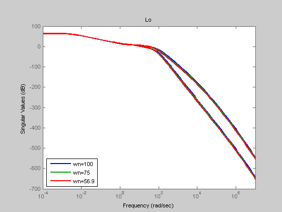
As wn is decreased, the bandwidth (hence wg) is lowered as seen on this Lo plot.
The rest of the plots in this problem show that a higher wn lowers the sensitivity at specific frequencies. The high freq. dynamics are pushed out and away from the nominal system dynamics.
figure(20); sigma(To1); hold on; sigma(To2); sigma(To3); Title('To'); legend('wn=100','wn=75','wn=56.9','Location','SouthWest');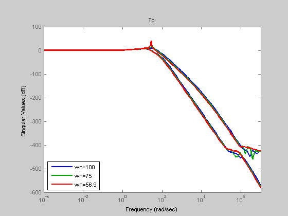
figure(30); sigma(So1); hold on; sigma(So2); sigma(So3); Title('So'); legend('wn=100','wn=75','wn=56.9','Location','SouthWest');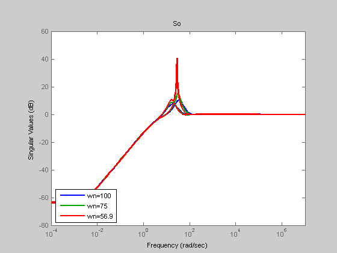
figure(40); sigma(KS1); hold on; sigma(KS2); sigma(KS3); Title('KS'); legend('wn=100','wn=75','wn=56.9','Location','SouthWest');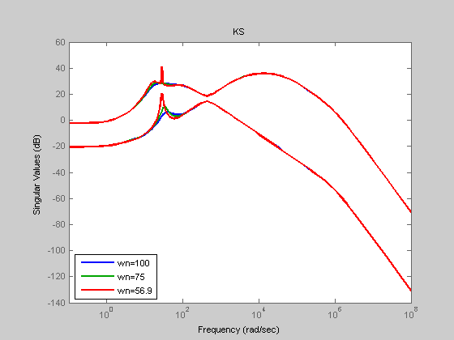
figure(50); sigma(SP1); hold on; sigma(SP2); sigma(SP3); Title('SP'); legend('wn=100','wn=75','wn=56.9','Location','SouthWest');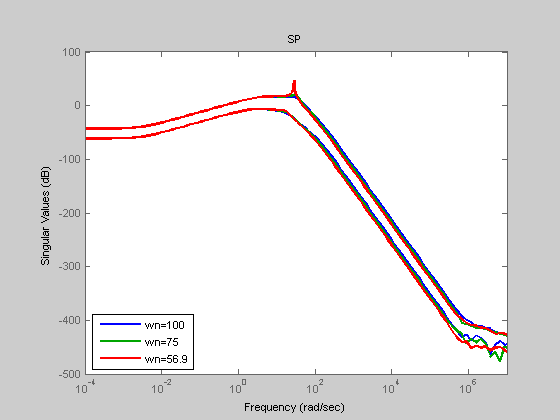
close all; function_options.evalCode=false; publish('f_CLTFM.m',function_options); display('www.public.asu.edu/~jvbenav/MIMO/Midterm.html'); display('www.public.asu.edu/~jvbenav/MIMO/f_CLTFM.html');
www.public.asu.edu/~jvbenav/MIMO/Midterm.html www.public.asu.edu/~jvbenav/MIMO/f_CLTFM.html
************************************************************************
************************************************************************
clc; close all; clear all;
Problem 4 (LQR Design for Modified F8 Aircraft)
Do LQR design problem for modified F8 in text. Discuss how you might improve the design?
% A.A. Rodriguez EEE598C; Spring 1998 %** Modified F8 Aircraft Macro ** 7 5 1 p132
ap = [ -0.8 -0.0006 -12 0
0 -0.014 -16.64 -32.2
1 -0.0001 -1.5 0
1 0 0 0 ];
bp = [ -19 -2.5
-0.66 -0.5
-0.16 -0.6
0 0 ];
cp = [ 0 0 0 1
0 0 -1 1 ];
dp = 0*ones(size(cp)*[1 0]', size(bp)*[0 1]');
% Scaling
r2d = 180/pi;
su = diag( [r2d, r2d] );
sx = [ 0 0 0 r2d
0 0 -r2d r2d
r2d 0 0 0
0 1 0 0];
sy = diag([ r2d, r2d ]);
% Scaled Linear Dynamics
ap = sx*ap*inv(sx); bp = sx*bp*inv(su); cp = sy*cp*inv(sx); dp = sy*dp*inv(su);
Augment Plant with Integrators For Zero Steady Error to Step Commands This follows from the Internal Model Priciple
a = [ 0*ones(2,2) cp
0*ones(4,2) ap ];
b = [0*ones(2,2)
bp ];
% LQR Design Parameters
q = diag([1, 1, 1, 1, 0, 0]);
r = diag ([0.01, 0.01]);
[g, k, clpoles] = lqr(a, b, q, r);
Form Open Loop Dynamical System State x = [ z' xp' ]' = [ z' y' xr' ]' where z is the integrator state y is the output (theta and flight path angle) xr contains the rest of the state (pitch rate and speed)
gz = g(:,1:2);
gy = g(:,3:4);
gr = g(:,5:6);
aol = [ 0*ones(2,2) 0*ones(2,4)
-bp*gz ap-bp*[0*ones(2,2) gr] ];
bol = [ - eye(2,2)
bp*gy ];
col = [ 0*ones(2,2) cp ];
dol = 0*ones(2,2);
% Form CLosed Loop Dynamics
acl = aol - bol*col;
bcl = bol;
ccl = col;
dcl = dol;
cls = ss(acl,bcl,ccl,dcl);
LQ OPEN LOOP FREQUENCY RESPONSE
w = logspace(-3,3,100); sv = sigma(ss(a, b, g, 0*ones(2,2)),w); sv = 20*log10(sv); figure; semilogx(w, sv) %clear sv title('Open Loop Singular Values: Plant Input') grid xlabel('Frequency (rad/sec)') ylabel('Singular Values (dB)')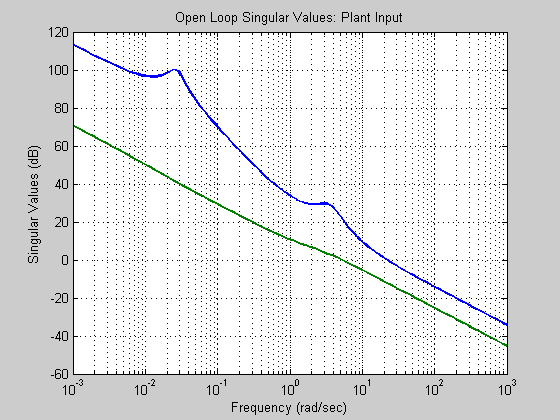
sv = sigma(ss(aol, bol, col, dol),w); sv = 20*log10(sv); figure; semilogx(w, sv) %clear sv title('Open Loop Singular Values: Error Signal') grid xlabel('Frequency (rad/sec)') ylabel('Singular Values (dB)')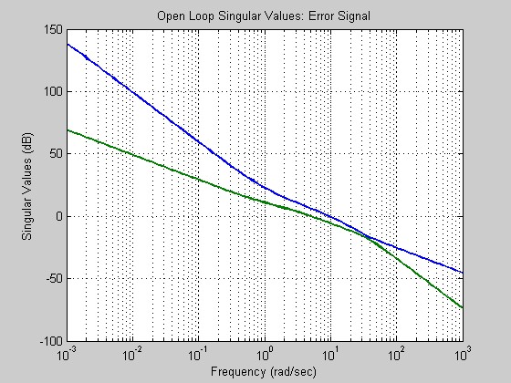
LQ CLOSED LOOP FREQUENCY RESPONSE
sv = sigma(ss(a-b*g, b, -g, eye(2,2)-0*ones(2,2)),w); sv = 20*log10(sv); figure; semilogx(w, sv) %clear sv title('LQ Sensitivity: Plant Input') grid xlabel('Frequency (rad/sec)') ylabel('Singular Values (dB)')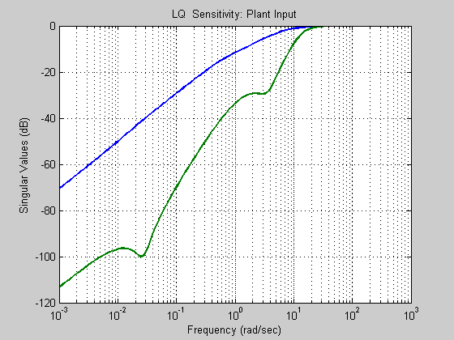
sv = sigma(ss(acl, bcl, -ccl, eye(2,2)-dcl),w); sv = 20*log10(sv); figure; semilogx(w, sv) %clear sv title('LQ Sensitivity: Error Signal') grid xlabel('Frequency (rad/sec)') ylabel('Singular Values (dB)')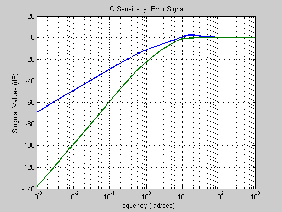
sv = sigma(ss(acl, bcl, ccl, dcl),w); sv = 20*log10(sv); figure; semilogx(w, sv) %clear sv title('LQ Complementary Sensitivity: Plant Output') grid xlabel('Frequency (rad/sec)') ylabel('Singular Values (dB)')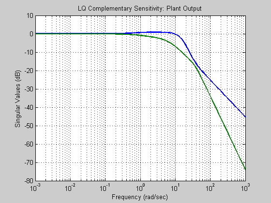
sv = sigma(ss(a-b*g, b, g, 0*ones(2,2)),w); sv = 20*log10(sv); figure; semilogx(w, sv) %clear sv title('LQ Complementary Sensitivity: Plant Input') grid xlabel('Frequency (rad/sec)') ylabel('Singular Values (dB)')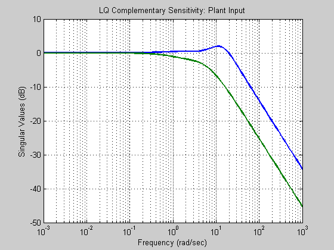
% Natural Modes: Poles (Eigenvalues), Eigenvectors [evec,eval] = eig(ap); % evec contains eigenvectors % eval contains eigenvalues % Natural Frequencies, Damping Factors, and Time Constants of System [wn,zeta] = damp(ss(ap,bp,cp,dp)); % natural frequencies, damping ratios tau = 1./(wn.*zeta); % vector of time constants % Transmission Zeros z = tzero(ss(ap,bp,cp,dp)); % transmission zeros zdir = null([z*eye(size(ap)*[1 0]')- ap -bp; cp dp]); % transmission zero directions % Transfer Functions: From u_i to x_j sys = zpk(ss(ap,bp,cp,dp)); % Zeros, Poles, and Gains fron u_i to x_j % Controllability cm = [bp ap*bp (ap^2)*bp (ap^3)*bp]; % Controllability Matrix rcm= rank(cm); % Rank of Controllability Matrix % Observability om = [cp; cp*ap; cp*(ap^2) cp*(ap^3)]; % Observability Matrix rom = rank(om); % Rank of Observability Matrix % SVD ANALYSIS at DC dc = cp*inv(-ap)*bp + dp; [udc,sdc,vdc] = svd(dc); % SVD Analysis at a selected frequency s1 = j*0.0270; % At Phugoid Mode g1 = cp*inv(s1*eye(4)-ap)*bp + dp; [u1, sing1, v1 ] = svd(g1); v1mag = abs(v1); v1phase = angle(v1)*180/pi; u1mag = abs(u1); u1phase = angle(u1)*180/pi; % SVD Analysis at a selected frequency s2 = j*3.6336; % At Short Period Mode g2 = cp*inv(s2*eye(4)-ap)*bp + dp; [u2, sing2, v2 ] = svd(g2); v2mag = abs(v2); v2phase = angle(v2)*180/pi; u2mag = abs(u2); u2phase = angle(u2)*180/pi;
% PLANT FREQUENCY RESPONSE: Scaled Singular Values w = logspace(-3,3,100); sv = sigma(ss(ap, bp, cp, dp),w); sv = 20*log10(sv); semilogx(w, sv) %clear sv title('Outputs: pitch, flight path angle; Inputs: elevator, flaperon') grid xlabel('Frequency (rad/sec)') ylabel('Singular Values (dB)') pause % PLANT STEP RESPONSE t = [0:0.1:600]; x = step(ss(ap, bp, eye(4,4), 0*ones(4,2)), t); % Step response for each state and each input % Step Response due to Elevator % Pitch: Due to Elevator plot(t,x(:,1,1)) grid title('Pitch response for Elevator = Unit Step') ylabel('Theta (deg)') xlabel('Time (seconds)') % Gamma: Due to Elevator plot(t,x(:,2,1)) grid title('Flight Path Angle response for Elevator = Unit Step') ylabel('Gamma (deg)') xlabel('Time (seconds)') % Pitch Rate: Due to Elevator plot(t,x(:,3,1)) grid title('Pitch Rate response for Elevator = Unit Step') ylabel('Pitch Rate (deg)') xlabel('Time (seconds)') % Speed: Due to Elevator plot(t,x(:,4,1)) grid title('Speed response for Elevator = Unit Step') ylabel('Speed (ft/sec)') xlabel('Time (seconds)') % Step Response due to Flaperon % Pitch: Due to Flaperon plot(t,x(:,1,2)) grid title('Pitch response for Flaperon = Unit Step') ylabel('Theta (deg)') xlabel('Time (seconds)') % Gamma: Due to Flaperon plot(t,x(:,2,2)) grid title('Flight Path Angle response for Flaperon = Unit Step') ylabel('Gamma (deg)') xlabel('Time (seconds)') % Pitch Rate: Due to Flaperon plot(t,x(:,3,2)) grid title('Pitch Rate response for Flaperon = Unit Step') ylabel('Pitch Rate (deg)') xlabel('Time (seconds)') % Speed: Due to Flaperon plot(t,x(:,4,2)) grid title('Speed response for Flaperon = Unit Step') ylabel('Speed (ft/sec)') xlabel('Time (seconds)')
% CLOSED LOOP COMMAND FOLLOWING t = [0:0.02:5]; [y, t, x] = step(cls,t);
% PITCH COMMAND % Pitch: r = [ 1 0 ] Pitch Command plot(t,y(:,:,1)) grid title('Pitch & Gamma Response To r = [1 0] Command') ylabel('Theta & Gamma (deg)') xlabel('Time (seconds)') % Form control: u = [ -g gy ] [x' r']' u10 = [-g gy]*[x(:,:,1)' ones(1, size(x(:,:,1)')*[0 1]') 0*ones(1, size(x(:,:,1)')*[0 1]') ]; % Controls: r = [ 1 0 ] Pitch Command plot(t,u10) grid title('Elevator & Flaperon Response To r = [1 0] Command') ylabel('Elev, Flap (deg)') xlabel('Time (seconds)')
% FLIGHT PATH COMMAND % Pitch: r = [ 0 1 ] Flight Path Command plot(t,y(:,:,2)) grid title('Pitch & Gamma Response To r = [0 1] Command') ylabel('Theta & Gamma (deg)') xlabel('Time (seconds)') % Form control: u = [ -g gy ] [x' r']' u01 = [-g gy]*[x(:,:,2)' 0*ones(1, size(x(:,:,2)')*[0 1]') ones(1, size(x(:,:,2)')*[0 1]') ]; % Controls: Flight Path Command plot(t,u01) grid title('Elevator & Flaperon Response To r = [0 1] Command') ylabel('Elev, Flap (deg)') xlabel('Time (seconds)')
% PITCH/FLIGHT PATH COMMAND % r = [ 1 1 ] Command [y, t, x] = lsim(cls,[ones(size(t)) ones(size(t))],t); plot(t,y) grid title('Pitch & Gamma Response To r = [1 1] Command') ylabel('Theta & Gamma (deg)') xlabel('Time (seconds)') % Form control: u = [ -g gy ] [x' r']' u11 = [-g gy]*[x' ones(1, size(x')*[0 1]') ones(1, size(x')*[0 1]') ]; plot(t,u11) grid title('Elevator & Flaperon Response To r = [1 1] Command') ylabel('Elev, Flap (deg)') xlabel('Time (seconds)')
% r = [ -1 1 ] Command Command [y, t, x] = lsim(cls,[-ones(size(t)) ones(size(t))],t); plot(t,y) grid title('Pitch & Gamma Response To r = [-1 1] Command') ylabel('Theta & Gamma (deg)') xlabel('Time (seconds)') % Form control: u = [ -g gy ] [x' r']' um11 = [-g gy]*[x' -ones(1, size(x')*[0 1]') ones(1, size(x')*[0 1]') ]; % Controls: Flight Path Command plot(t,um11) grid title('Elevator & Flaperon Response To r = [-1 1] Command') ylabel('Elev, Flap (deg)') xlabel('Time (seconds)')
close all;
************************************************************************
************************************************************************
Problem 5
clc; clear all; close all format set (0, 'DefaultLineLineWidth', 2) wvec = logspace(-2,6,1000); wvec2 = wvec; tvec = linspace(0,400,4000); tvec2 = tvec;
Plant Dynamics
ap = [ -0.8 -0.0006 -12 0
0 -0.014 -16.64 -32.2
1 -0.0001 -1.5 0
1 0 0 0 ];
bp = [ -19 -2.5
-0.66 -0.5
-0.16 -0.6
0 0 ];
cp = [ 0 0 0 1
0 0 -1 1 ];
dp = 0*ones(size(cp)*[1 0]', size(bp)*[0 1]');
% We wish to transfer these variableis which are in radians into degrees!!
% Using the transformation matrices
% u2 = Su*u1 ---> u1 = inv(Su)*u2
% x2 = Sx*x1 ---> x1 = inv(Sx)*x2
% y2 = Sy*y1 ---> y1 = inv(Sy)*y2
% Change of Variables by the following
% starting with the nominal state space equations:
% X1_dot = A1*x1 + B1*u1
% Y1 = C1*x1 + D1*u1
%
% we can perform the change of variables via:
%
% X2_dot = Sx*X1_dot
% = Sx( A1*x1 + B1*u1)
% = Sx( A1*inv(Sx)*x2) + Sx(B1*inv(Su)*u2)
% = [Sx*A1*inv(Sx)]*x2 + [Sx*B1*inv(Su)]*u2
%
% Y2 = Sy*y1
% = Sy(C1*x1 + D1*u1)
% = Sy( C1*inv(Sx)*x2) + Sy(D1*inv(Su)*u2)
% = [Sy*C1*inv(Sx)]*x2 + [Sy*D1*inv(Su)]*u2
%
% Which gives us the following state space realization
% X2_dot = A2*x2 + B2*u2
% Y2 = C2*x2 + D2*u2
% Where:
% A2 = [Sx*A1*inv(Sx)]
% B2 = [Sx*B1*inv(Su)]
% C2 = [Sy*C1*inv(Sx)]
% D2 = [Sy*D1*inv(Su)]
%
r2d = 180/pi;
su = diag( [r2d, r2d] );
sx = [ 0 0 0 r2d
0 0 -r2d r2d
r2d 0 0 0
0 1 0 0];
sy = diag([ r2d, r2d ]) ;
%
% Scaled Linear Dynamics
%
Ap = sx*ap*inv(sx);
Bp = sx*bp*inv(su);
Cp = sy*cp*inv(sx);
Dp = sy*dp*inv(su);
% Scaled Plant
P = ss(Ap,Bp,Cp,Dp);
INPUT, OUTPUT, STATE INFORMATION
inputvec = 1:2; outputvec = 1:2; statevec = 1:4; Ao = Ap(statevec,statevec); Bo = Bp(statevec,inputvec); Co = Cp(outputvec,statevec); Do = Dp(outputvec,inputvec); Po = ss(Ao, Bo, Co, Do);
PLANT SIZE INFORMATION
n_y = size(P,1); % Number of Outputs n_u = size(P,2); % Number of Inputs n_s = size(P,'order'); % Number of States
BILINEAR TRANFORMATION
p2 = -1e10; p1 = -2.6e-3*2;
Pt=bilin(P, 1,'Sft_jw',[p2 p1]);
W1 - Weighting on Sensitivity TFM, S = (I + PK)^{1}
Ms11 = 10^(10/50); wb11 = 1.00; Eps11 = 0.015;
Ms22 = 10^(10/50); wb22 = 1.0; Eps22 = 0.015;
W1 = [tf([1/Ms11 wb11], [1 wb11*Eps11]) 0 ;
0 tf([1/Ms22 wb22], [1 wb22*Eps22]) ];
W2 - Weighting on Control Sensitivity TFM, KS
Eps = 0.01;
wbu11 = 1e6; Mu11 = 10.0;
wbu22 = 1e3; Mu22 = 5.0;
W2 = [tf([1 wbu11/Mu11], [Eps wbu11]) 0 ;
0 tf([1 wbu11/Mu11], [Eps wbu11]) ];
%W3 - Weighting on Complementary Sensitivity TFM, T = I - S
Eps = 0.01;
My11 = 10^(10/30); wbc11= 10*2;
My22 = 10^(10/30); wbc22= 50*2;
W3 = [tf([1 wbc11/My11], [Eps wbc11]) 0 ;
0 tf([1 wbc22/My22], [Eps wbc22]) ];
Generalized Plant
[G] = augw(Pt, W1, W2, W3);
Hinf DESIGN
[Kt,CL,GAM,INFO] = hinfsyn(G,n_y,n_u,'method','lmi','TOLGAM',1e-3,'display', 'on'); GAM
Warning: the controller has fast modes (modulus > 1e6)
Increase GAMMA to eliminate fast dynamics
GAM =
0.7224
Inverse Bilinear Transformation
K=bilin(Kt,-1,'Sft_jw',[p2 p1]);
Closed Loop Maps
[Lo,Li,So,Si,To,Ti,KS,SP] = f_CLTFM(P,K); Try = To; Tru_o = KS; Tru_w = KS; Tdiy_o = SP;
CLOSED LOOP POLES
damp(pole(To))
Eigenvalue Damping Freq. (rad/s)
-9.76e+005 1.00e+000 9.76e+005
-1.00e+005 1.00e+000 1.00e+005
-1.00e+005 1.00e+000 1.00e+005
-1.00e+004 1.00e+000 1.00e+004
-2.00e+003 1.00e+000 2.00e+003
-6.99e+001 1.00e+000 6.99e+001
-2.85e+001 1.00e+000 2.85e+001
-1.15e+000 + 3.45e+000i 3.17e-001 3.63e+000
-1.15e+000 - 3.45e+000i 3.17e-001 3.63e+000
-2.46e+000 1.00e+000 2.46e+000
-2.00e+000 1.00e+000 2.00e+000
-5.78e-003 + 2.64e-002i 2.14e-001 2.71e-002
-5.78e-003 - 2.64e-002i 2.14e-001 2.71e-002
-1.39e-002 1.00e+000 1.39e-002
FREQUENCY RESPONSES
fs = 12; fw = 'normal'; color = 'b'; style = '-';
****************** FIGURE 1 WEIGHTING FUNCTIONS
figure(10) set(gcf,'NumberTitle','off') set(gcf,'Name','W1, W2, W3') if ~isempty(W1) [sv1] = sigma(inv(W1),wvec); semilogx(wvec, 20*log10(sv1), 'r', 'LineStyle', style, 'LineWidth', 2) hold on end if ~isempty(W2) [sv2] = sigma(inv(W2),wvec); semilogx(wvec, 20*log10(sv2), 'g', 'LineStyle', style, 'LineWidth', 2) end if ~isempty(W3) [sv3] = sigma(inv(W3),wvec); semilogx(wvec, 20*log10(sv3), 'b', 'LineStyle', style, 'LineWidth', 2) end xlim([min(wvec) max(wvec)]) set(gca, 'Fontsize',fs) title('Weighting Function Magnitude Responses', 'FontSize', fs, 'FontWeight', fw) xlabel('Frequency (rad/sec)', 'FontSize', fs, 'FontWeight', fw) ylabel('Magnitude (dB)', 'FontSize', fs, 'FontWeight', fw) grid on;hold on set(gca, 'FontSize', fs, 'FontWeight', fw) set(gcf, 'Color', [1 1 1]) % legend('W_1{-1}','W_2{-1}','W_3{-1}', 4)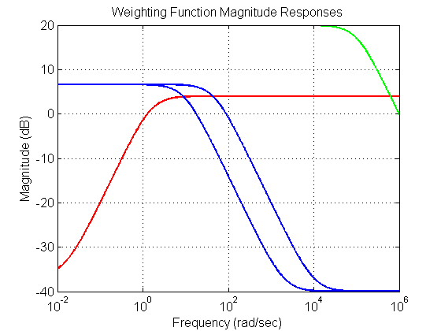
****************** FIGURE 2 PLANT
[sv] = sigma(P,wvec); figure(20) set(gcf,'NumberTitle','off') set(gcf,'Name','P') semilogx(wvec, 20*log10(sv), 'Color', color, 'LineWidth', 2, 'LineStyle', style) xlim([min(wvec) max(wvec)]) set(gca, 'Fontsize',fs) title('Plant Singular Values', 'FontSize', fs, 'FontWeight', fw) xlabel('Frequency', 'FontSize', fs, 'FontWeight', fw) ylabel('Magnitude', 'FontSize', fs, 'FontWeight', fw) grid on;hold on set(gca, 'FontSize', fs, 'FontWeight', fw) set(gcf, 'Color', [1 1 1]) % ******************************************************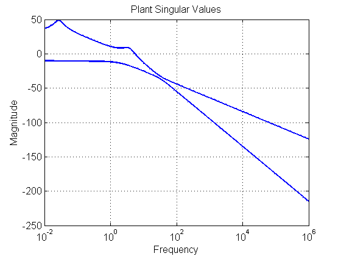
FIGURE 3 CONTROLLER
[sv] = sigma(K,wvec2); figure(30) set(gcf,'NumberTitle','off') set(gcf,'Name','K') semilogx(wvec, 20*log10(sv), 'Color', color, 'LineWidth', 2, 'LineStyle', style) xlim([min(wvec) max(wvec)]) set(gca, 'Fontsize',fs) title('Controller Singular Values', 'FontSize', fs, 'FontWeight', fw) xlabel('Frequency', 'FontSize', fs, 'FontWeight', fw) ylabel('Magnitude', 'FontSize', fs, 'FontWeight', fw) grid on; hold on set(gca, 'FontSize', fs, 'FontWeight', fw) set(gcf, 'Color', [1 1 1]) % ******************************************************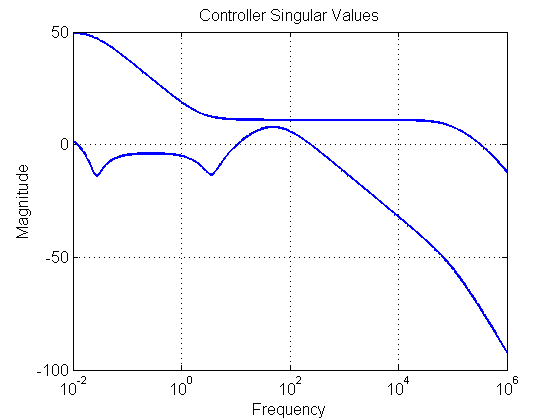
FIGURE 4 OPEN LOOP
[sv] = sigma(Lo,wvec); figure(40) set(gcf,'NumberTitle','off') set(gcf,'Name','L') semilogx(wvec, 20*log10(sv), 'Color', color, 'LineWidth', 2, 'LineStyle', style) xlim([min(wvec) max(wvec)]) set(gca, 'Fontsize',fs) title('Open Loop Singular Values at Plant Output', 'FontSize', fs, 'FontWeight', fw) xlabel('Frequency', 'FontSize', fs, 'FontWeight', fw) ylabel('Magnitude', 'FontSize', fs, 'FontWeight', fw) grid on; hold on set(gca, 'FontSize', fs, 'FontWeight', fw) set(gcf, 'Color', [1 1 1]) % ******************************************************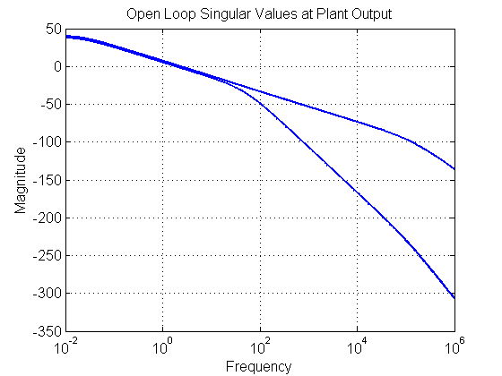
FIGURE 5 SENSITIVITY
[sv] = sigma(So,wvec); figure(50) set(gcf,'NumberTitle','off') set(gcf,'Name','S') semilogx(wvec, 20*log10(sv), 'Color', color, 'LineWidth', 2, 'LineStyle', style) xlim([min(wvec) max(wvec)]); hold on if ~isempty(W1) semilogx(wvec, 20*log10(sv1), 'k', 'LineWidth', 2, 'LineStyle', style) xlim([min(wvec) max(wvec)]) end set(gca, 'Fontsize',fs) title('Sensitivity Singular Values at Plant Output', 'FontSize', fs, 'FontWeight', fw) xlabel('Frequency', 'FontSize', fs, 'FontWeight', fw) ylabel('Magnitude', 'FontSize', fs, 'FontWeight', fw) grid on set(gca, 'FontSize', fs, 'FontWeight', fw) set(gcf, 'Color', [1 1 1]) % ******************************************************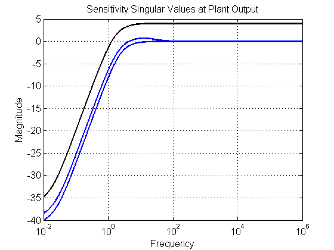
FIGURE 6 COMLEMENTARY SENSITIVITY
[sv] = sigma(To,wvec); figure(60) set(gcf,'NumberTitle','off') set(gcf,'Name','T') semilogx(wvec, 20*log10(sv), 'Color', color, 'LineWidth', 2, 'LineStyle', style) xlim([min(wvec) max(wvec)]); hold on if ~isempty(W3) semilogx(wvec, 20*log10(sv3), 'k', 'LineWidth', 2, 'LineStyle', style) xlim([min(wvec) max(wvec)]) end set(gca, 'Fontsize',fs) title('Compementary Sensitivity Singular Values at Plant Output', 'FontSize', fs, 'FontWeight', fw) xlabel('Frequency', 'FontSize', fs, 'FontWeight', fw) ylabel('Magnitude', 'FontSize', fs, 'FontWeight', fw) grid on set(gca, 'FontSize', fs, 'FontWeight', fw) set(gcf, 'Color', [1 1 1]) % ******************************************************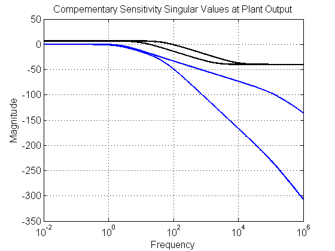
FIGURE 6.1 COMLEMENTARY SENSITIVITY with Pre-Filter
[sv] = sigma(Try,wvec); figure(61) set(gcf,'NumberTitle','off') set(gcf,'Name','Try') semilogx(wvec, 20*log10(sv), 'Color', color, 'LineWidth', 2, 'LineStyle', style) xlim([min(wvec) max(wvec)]) set(gca, 'Fontsize',fs) title('Compementary Sensitivity Singular Values (with Pre-Filter)', 'FontSize', fs, 'FontWeight', fw) xlabel('Frequency', 'FontSize', fs, 'FontWeight', fw) ylabel('Magnitude', 'FontSize', fs, 'FontWeight', fw) grid on;hold on set(gca, 'FontSize', fs, 'FontWeight', fw) set(gcf, 'Color', [1 1 1]) % ******************************************************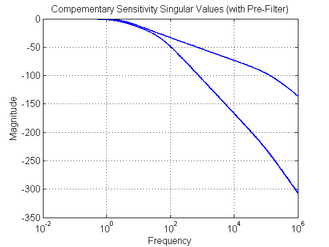
FIGURE 7 Tru
[sv] = sigma(Tru_o,wvec2); figure(70) set(gcf,'NumberTitle','off') set(gcf,'Name','KS') semilogx(wvec, 20*log10(sv), 'Color', color, 'LineWidth', 2, 'LineStyle', style) xlim([min(wvec) max(wvec)]); hold on if ~isempty(W2) semilogx(wvec, 20*log10(sv2), 'k', 'LineWidth', 2, 'LineStyle', style) xlim([min(wvec) max(wvec)]) end set(gca, 'Fontsize',fs) title('Reference to Control Singular Values', 'FontSize', fs, 'FontWeight', fw) xlabel('Frequency', 'FontSize', fs, 'FontWeight', fw) ylabel('Magnitude', 'FontSize', fs, 'FontWeight', fw) grid on set(gca, 'FontSize', fs, 'FontWeight', fw) set(gcf, 'Color', [1 1 1]) % ******************************************************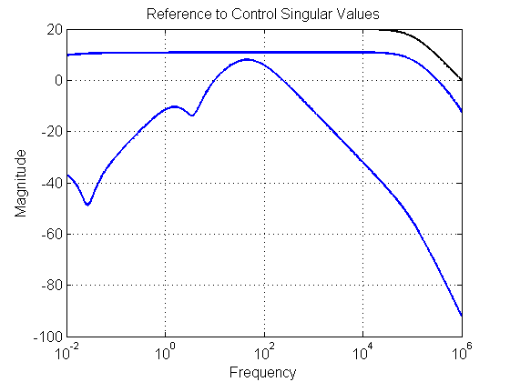
FIGURE 7.1 Tru
[sv] = sigma(Tru_w,wvec2); figure(71) set(gcf,'NumberTitle','off') set(gcf,'Name','Tru') semilogx(wvec, 20*log10(sv), 'Color', color, 'LineWidth', 2, 'LineStyle', style) xlim([min(wvec) max(wvec)]) set(gca, 'Fontsize',fs) title('Reference to Control Singular Values with Pre-Filter', 'FontSize', fs, 'FontWeight', fw) xlabel('Frequency', 'FontSize', fs, 'FontWeight', fw) ylabel('Magnitude', 'FontSize', fs, 'FontWeight', fw) grid on; hold on set(gca, 'FontSize', fs, 'FontWeight', fw) set(gcf, 'Color', [1 1 1]) % ******************************************************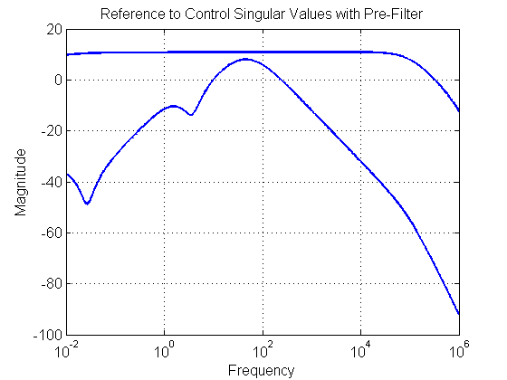
FIGURE 8 Tdiy
[sv] = sigma(Tdiy_o,wvec); figure(80) set(gcf,'NumberTitle','off') set(gcf,'Name','Tdiy') semilogx(wvec, 20*log10(sv), 'Color', color, 'LineWidth', 2, 'LineStyle', style) xlim([min(wvec) max(wvec)]) set(gca, 'Fontsize',fs) title('Input Disturbance to Output Singular Values', 'FontSize', fs, 'FontWeight', fw) xlabel('Frequency', 'FontSize', fs, 'FontWeight', fw) ylabel('Magnitude', 'FontSize', fs, 'FontWeight', fw) grid on; hold on set(gca, 'FontSize', fs, 'FontWeight', fw) set(gcf, 'Color', [1 1 1]) % ******************************************************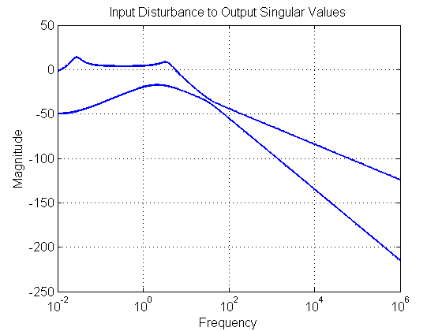
TIME RESPONSES
fignum = 90; % outputs [y,t] = step(To,tvec); figure(fignum) set(gcf,'NumberTitle','off') set(gcf,'Name','y1(t)_u1(t)') plot(t, y(:,1,1), 'Color', color, 'LineWidth', 2, 'LineStyle', style) grid on xlabel('Time (seconds)', 'FontSize', fs, 'FontWeight', fw) ylabel('y(t)', 'FontSize', fs, 'FontWeight', fw) title('Theta Response to Elevator Step Reference Command', 'FontSize', fs, 'FontWeight', fw) fignum = fignum+1;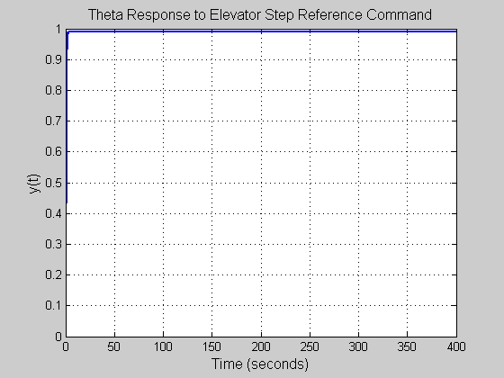
figure(fignum) set(gcf,'NumberTitle','off') set(gcf,'Name','y1(t)_u2(t)') plot(t, y(:,2,1), 'Color', color, 'LineWidth', 2, 'LineStyle', style) grid on xlabel('Time (seconds)', 'FontSize', fs, 'FontWeight', fw) ylabel('y(t)', 'FontSize', fs, 'FontWeight', fw) title('Gamma Response to Elevator Step Reference Command', 'FontSize', fs, 'FontWeight', fw) set(gca, 'FontSize', fs, 'FontWeight', fw) fignum = fignum+1;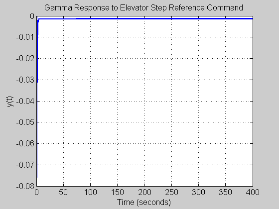
figure(fignum) set(gcf,'NumberTitle','off') set(gcf,'Name','y2(t)_u1(t)') plot(t, y(:,1,2), 'Color', color, 'LineWidth', 2, 'LineStyle', style) grid on; xlabel('Time (seconds)', 'FontSize', fs, 'FontWeight', fw) ylabel('y(t)', 'FontSize', fs, 'FontWeight', fw) title('Thete Response to Flaperon Step Reference Command', 'FontSize', fs, 'FontWeight', fw) set(gca, 'FontSize', fs, 'FontWeight', fw) fignum = fignum+1;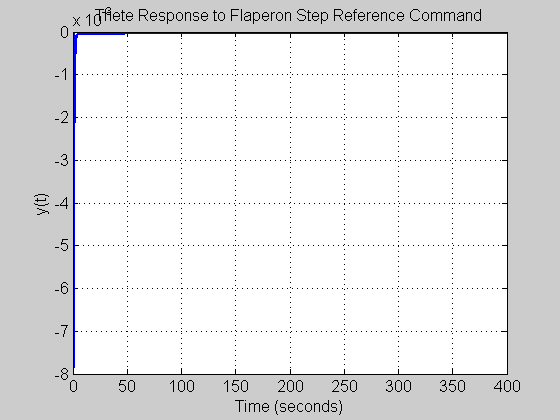
figure(fignum) set(gcf,'NumberTitle','off') set(gcf,'Name','y2(t)_u2(t)') plot(t, y(:,2,2), 'Color', color, 'LineWidth', 2, 'LineStyle', style) grid on;hold on xlabel('Time (seconds)', 'FontSize', fs, 'FontWeight', fw) ylabel('y(t)', 'FontSize', fs, 'FontWeight', fw) title('Theta Response to Flaperon Step Reference Command', 'FontSize', fs, 'FontWeight', fw) set(gca, 'FontSize', fs, 'FontWeight', fw) fignum = fignum+1; % Controls [u,t] = step(Tru_o,tvec2);
figure(fignum) set(gcf,'NumberTitle','off') set(gcf,'Name','u1(t)_r1(t)') plot(t, u(:,1,1), 'Color', color, 'LineWidth', 2, 'LineStyle', style) xlabel('Time (seconds)', 'FontSize', fs, 'FontWeight', fw) ylabel('u(t)', 'FontSize', fs, 'FontWeight', fw) title('Elevator Response to Elevator Step Reference Command', 'FontSize', fs, 'FontWeight', fw) set(gca, 'FontSize', fs, 'FontWeight', fw) fignum = fignum+1;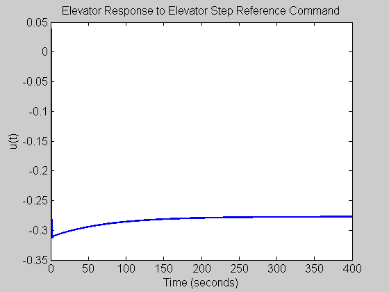
figure(fignum) set(gcf,'NumberTitle','off') set(gcf,'Name','u1(t)_r2(t)') plot(t, u(:,2,1), 'Color', color, 'LineWidth', 2, 'LineStyle', style) grid on xlabel('Time (seconds)', 'FontSize', fs, 'FontWeight', fw) ylabel('u(t)', 'FontSize', fs, 'FontWeight', fw) title('Flaperon Response to Elevator Step Reference Command', 'FontSize', fs, 'FontWeight', fw) set(gca, 'FontSize', fs, 'FontWeight', fw) fignum = fignum+1;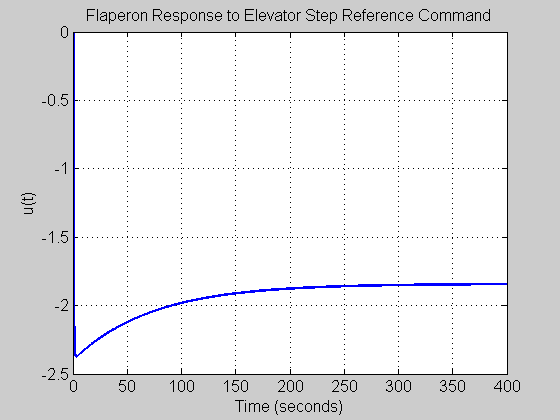
figure(fignum) set(gcf,'NumberTitle','off') set(gcf,'Name','u1(t)_r2(t)') plot(t, u(:,1,2), 'Color', color, 'LineWidth', 2, 'LineStyle', style) xlabel('Time (seconds)', 'FontSize', fs, 'FontWeight', fw) ylabel('u(t)', 'FontSize', fs, 'FontWeight', fw) title('Elevator Response to Flaperon Step Reference Command', 'FontSize', fs, 'FontWeight', fw) set(gca, 'FontSize', fs, 'FontWeight', fw) fignum = fignum+1;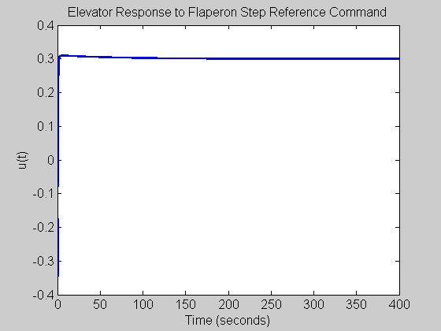
figure(fignum) set(gcf,'NumberTitle','off') set(gcf,'Name','u2(t)_r2(t)') plot(t, u(:,2,2), 'Color', color, 'LineWidth', 2, 'LineStyle', style) grid on xlabel('Time (seconds)', 'FontSize', fs, 'FontWeight', fw) ylabel('u(t)', 'FontSize', fs, 'FontWeight', fw) title('Flaperon Response to Flaperon Step Reference Command', 'FontSize', fs, 'FontWeight', fw) set(gca, 'FontSize', fs, 'FontWeight', fw) set(gcf, 'Color', [1 1 1])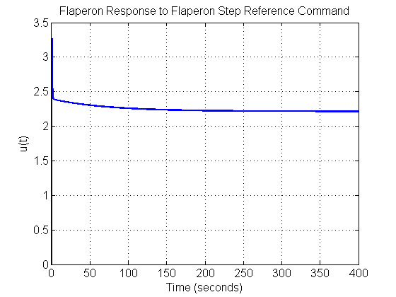
************************************************************************
************************************************************************
Problem 6: Control System Design of a Fishery
close all; clear all; clc;
Load parameter values, to be using in Simulink file
r = 0.3; q = 0.3; k = 100; xo = 18.75; xe = 37.5014; upe = 0.6250; Ap = r-((2*r*xe)/k)-q*upe; Bp = -q*xe; Cp = 1; Dp = 0; P = ss(Ap,Bp,Cp,Dp);
Run Linear and Nonlinear Simulation
timespan = 40; % length of simulation time (in years) g = -8; % vector of possible gain values z = 0.5; % vector of possible zero values sim('probsix',timespan)
Find the overshoot of the linear response
last_x_lin_index = size(x_lin)*[1 0]'; max_lin = max(x_lin); overshoot = max_lin - x_lin(last_x_lin_index); lin_Percent_Overshoot(1) = ((max_lin - x_lin(last_x_lin_index))/max_lin)*100; %% % Find the overshoot of the nonlinear response last_x_nl_index = size(x_nl)*[1 0]'; max_nl = max(x_nl); overshoot_nl = max_nl - x_nl(last_x_nl_index); nonlin_Percent_Overshoot(1) = ((max_nl - x_nl(last_x_nl_index))/max_nl)*100; display(sprintf('Linear overshoot: %f',lin_Percent_Overshoot(1))); display(sprintf('Non-Linear overshoot: %f',nonlin_Percent_Overshoot(1))); figure; set(gcf,'NumberTitle','off') set(gcf,'Name','Time Response') plot(time,x_lin,time,x_nl,time,xd) title('Output Time Response for Problem 6') xlabel('time (years)') ylabel('output: quantity of fish') legend('Linear','Non-Lin','Cmd','Location','SouthEast') grid on;hold on
Linear overshoot: 0.017470 Non-Linear overshoot: 0.003355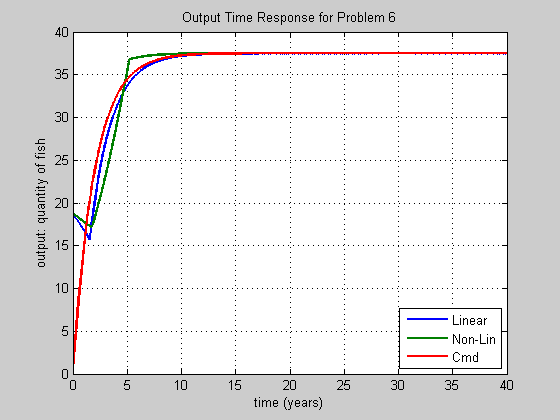
figure; set(gcf,'NumberTitle','off') set(gcf,'Name','Controls') plot(time,u_lin,time,u_non) title('Control Time Response for Problem 6') xlabel('time (years)') ylabel('control: harvesting effort') legend('Linear','Non-Lin','Location','SouthEast') grid on;hold on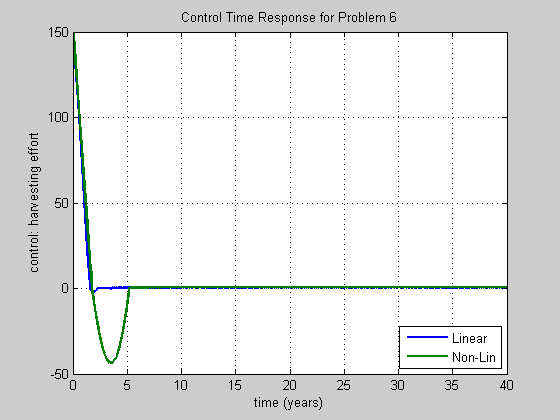
figure; set(gcf,'NumberTitle','off') set(gcf,'Name','Sat Controls') plot(time,sat_u_lin,time,sat_u_non) title('Linear SaturatedControl Time Response for Problem 6') xlabel('time (years)') ylabel('saturated control') legend('Linear','Non-Lin','Location','SouthEast') grid on;hold on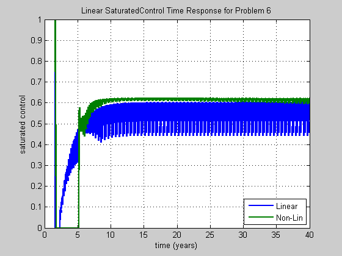
xd=xe; % overshoot_lin=abs((xd-max(x_lin))/xd)*100; % overshoot_nl=abs((xd-max(x_nl))/xd)*100; K = tf([g g*z],[1 0]); [Ak Bk Ck Dk] = ssdata(K); W = tf(z,[1 z]); [Lo,Li,So,Si,To,Ti,KS,SP] = f_CLTFM(P,K);
Plot Closed-Loop Relationships
w = logspace(-3,4,1000); %************************************************************************* % FIGURE - OPEN LOOP, Lo = PK %************************************************************************* figure; set(gcf,'NumberTitle','off') set(gcf,'Name','Lo') bode(Lo,w) title('Lo Bode Magnitude and Phase Plot') xlabel('Frequency (rad/sec)') ylabel('Magnitude (dB)') grid on;hold on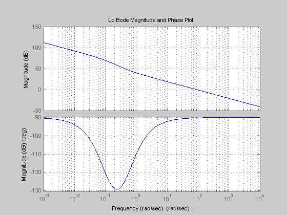
%************************************************************************* % FIGURE - OUTPUT SENSITIVITY, So = (I + Lo)^{-1} %************************************************************************* figure; set(gcf,'NumberTitle','off') set(gcf,'Name','So') bodemag(w,So) title('So Bode Magnitude Plot') xlabel('Frequency (rad/sec)') ylabel('Magnitude (dB)') grid on;hold on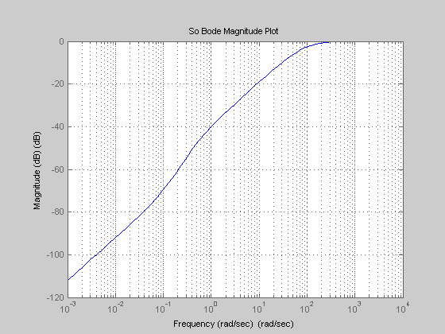
%************************************************************************* % FIGURE - OUTPUT COMPLEMENTARY SENSITIVITY , To = I - So = Lo(I+Lo)^{-1} %************************************************************************* figure; set(gcf,'NumberTitle','off') set(gcf,'Name','To') bodemag(w,To) title('To Bode Magnitude Plot') xlabel('Frequency (rad/sec)') ylabel('Magnitude (dB)') grid on;hold on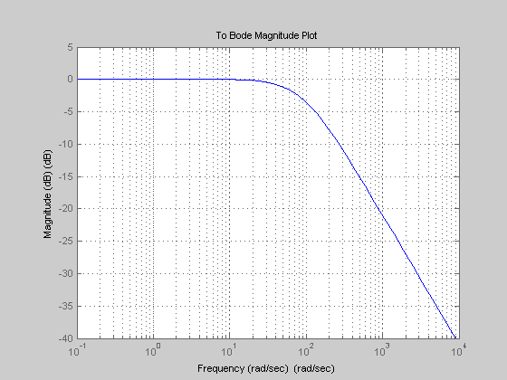
%************************************************************************* % FIGURE - REFERENCE TO CONTROL (NO PRE-FILTER), Trhat u = K So = K (I + PK)^{-1} %************************************************************************* figure; set(gcf,'NumberTitle','off') set(gcf,'Name','KS') bodemag(w,KS) title('Reference to Control (no Pre-filter) Bode Magnitude Plot') xlabel('Frequency (rad/sec)') ylabel('Magnitude (dB)') grid on;hold on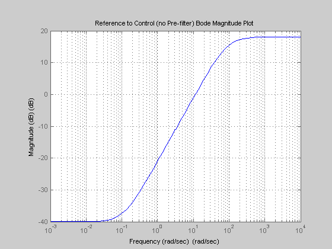
%************************************************************************* % FIGURE - INPUT DISTURBANCE TO OUTPUT, Tdiy = So P %************************************************************************* figure; set(gcf,'NumberTitle','off') set(gcf,'Name','SP') bodemag(w,SP) title('Input Disturbance to Output Bode Magnitude Plot') xlabel('Frequency (rad/sec)') ylabel('Magnitude (dB)') grid on;hold on
close all;